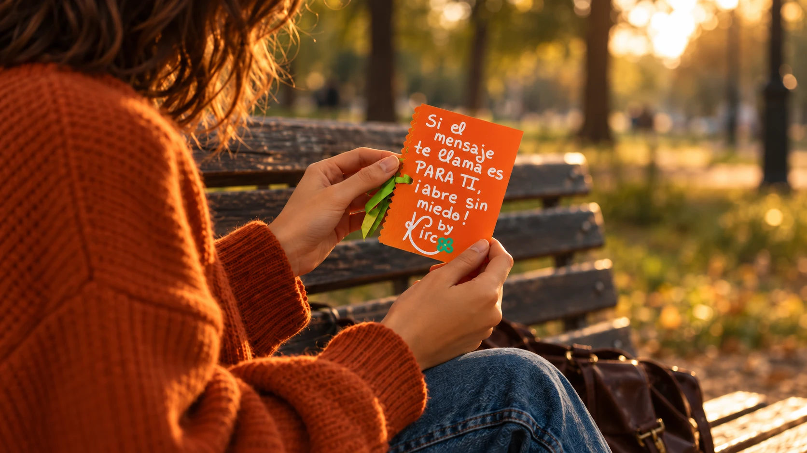
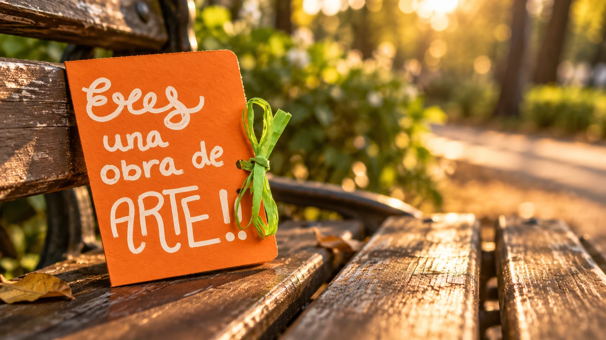
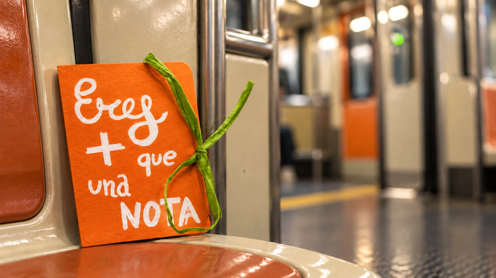
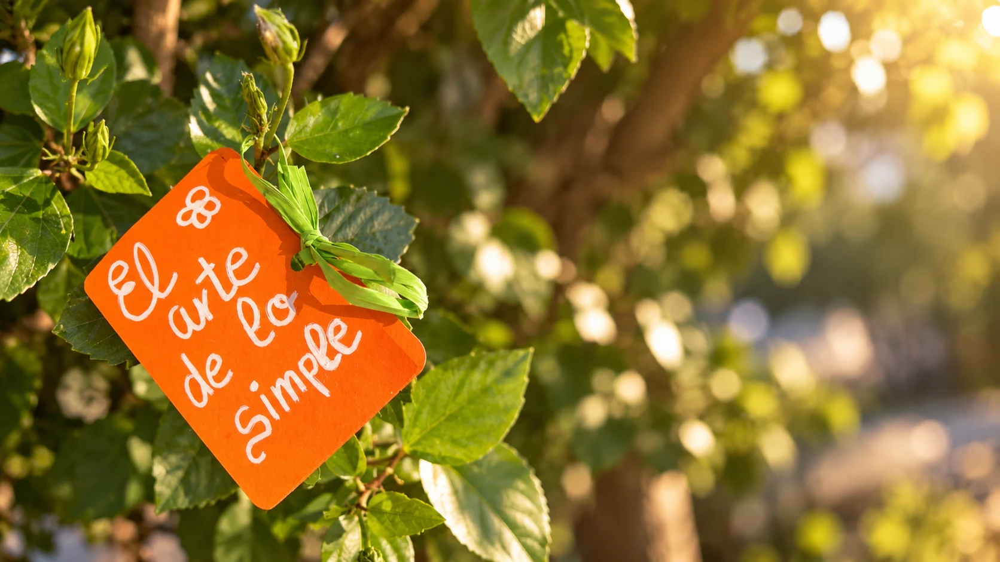
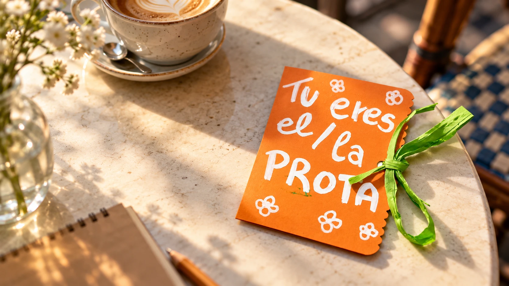
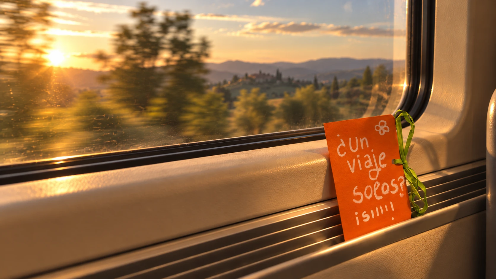

Un 13 de abril de 2021 abrí una cuenta de Instagram con la idea de publicar frases bonitas. De esas que se guardan en favoritos y se comparten en las historias. Pero algo no encajaba. Las frases estaban bien, pero faltaba algo real, algo que llegara de verdad.
Y entonces empecé a escribir cartitas.
Sin destinatario. Sin remitente. Solo papel, bolígrafo y la sensación de que alguien, en algún lugar de Madrid, quizás las necesitaba. Las dejé en bancos de parques, en asientos de metro o entre los libros de una biblioteca. Y desde ese día comenzó nuestra historia: Queridos Desconocidos.
La primavera del 2022 fui un pasito más allá. Si alguien hacía algo por mí —darme una tirita, ayudarme a llegar a algún sitio— le entregaba una cartita de agradecimiento escrita a mano. Porque si un desconocido hacía algo por mí, merecía algo más que un simple "gracias". Algo así como una cadena de favores.
Escribir es mi manera de relajarme y de poner en palabras lo que a veces no sé cómo decir de otra forma. Aunque es un proyecto que me apasiona, hay días en que la rutina lo complica todo y no tengo tiempo de dejarte una cartita. Pero entonces releo vuestros mensajes cuando encontráis alguna de las mías, y la ilusión vuelve de golpe.
Eso es lo que me mantiene aquí.
Si tú encontraste una de mis cartitas, espero que en ese momento hayas sentido lo mismo que yo imagino: curiosidad primero, y luego esa sensación pequeña y bonita de que alguien pensó en ti sin conocerte.
Porque de eso va todo esto.
Escribo a mano, con boli y letra propia.
Camino buscando el lugar más especial: un banco, un metro, una ramita.
La dejo por Madrid para quien la necesite.

Banco del parque

Asiento de metro

Una ramita

Mesa de café

Ventana de tren
¿Quieres tu propia cartita?
para ti